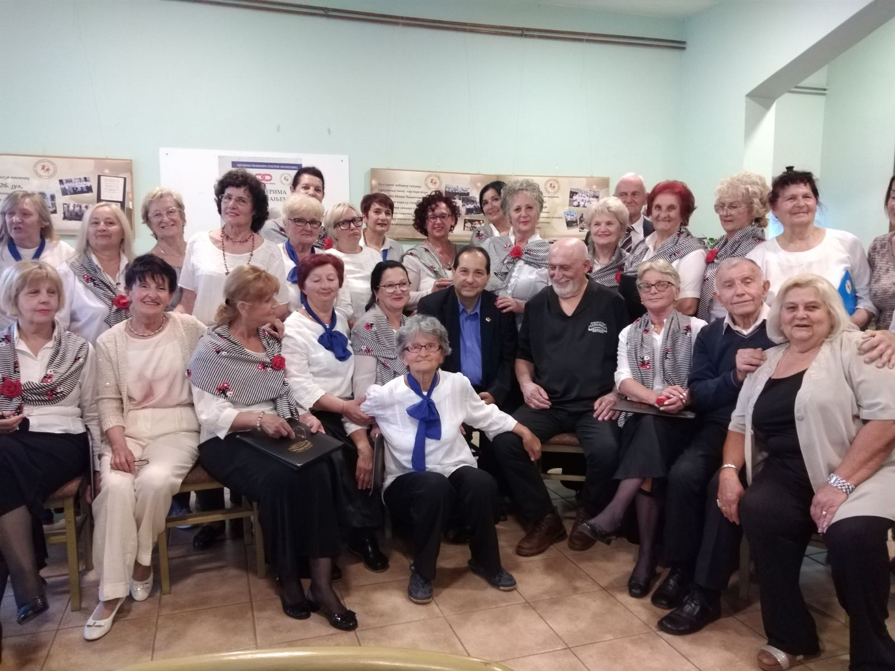
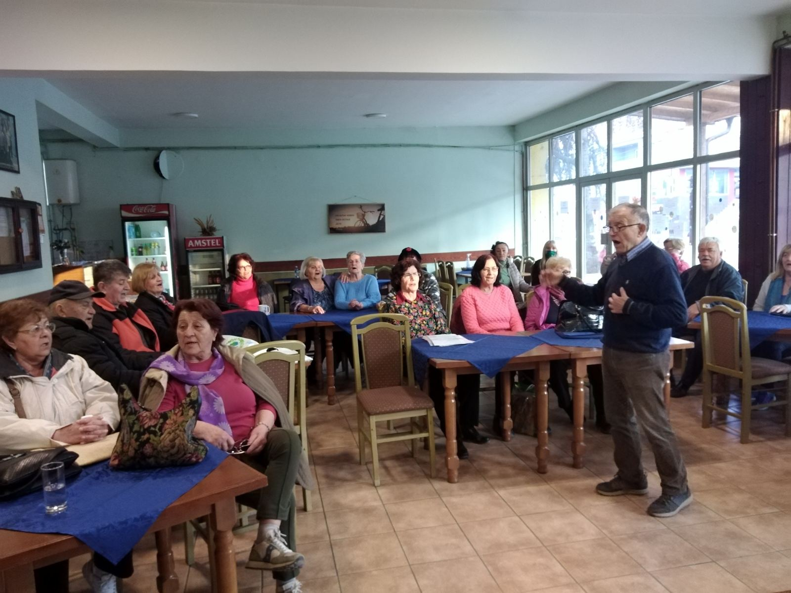
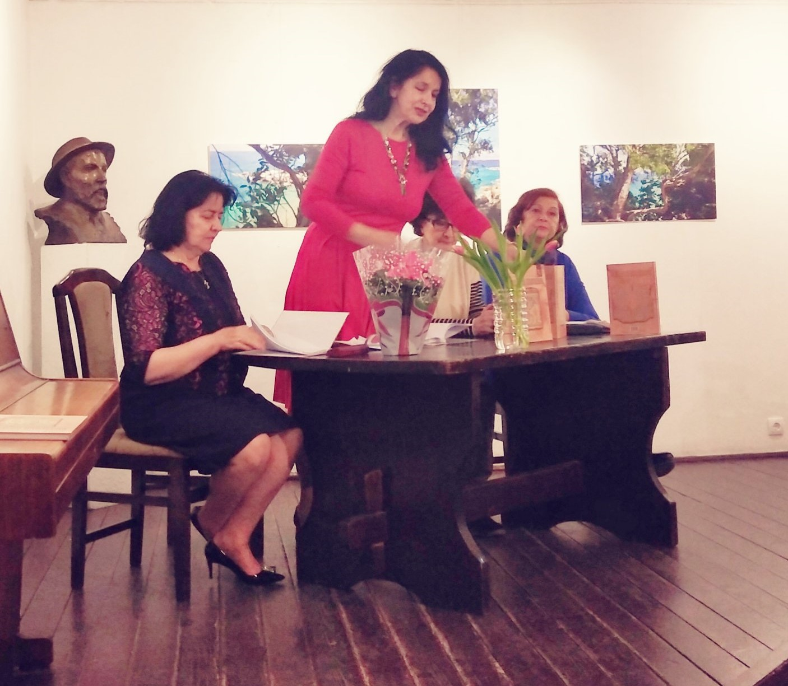
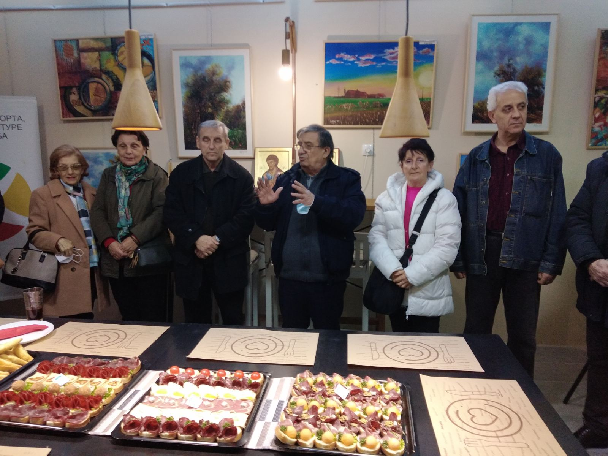
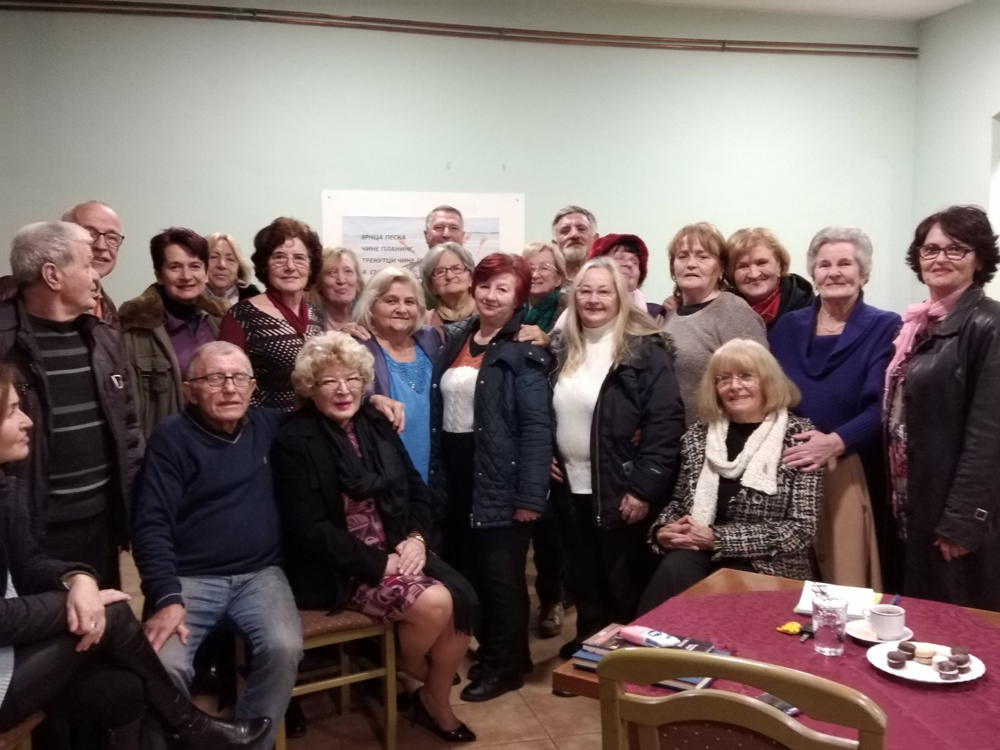

ДОГАЂАЈИ
Ова страница резервисана је за приказ одржаних и најаву будућих књижевних вечери, гостовања на телевизији и промоција књига у организацији Књижевног клуба Покрета трећег доба Србије.
Промоција књиге "Да се не заборави" Јова Голубовића, Културни центар Чукарица (23. мај 2022. године)
О књизи су говорили Радивоје Паповић, Матија Николић, Живко Кулић. Одломке из књиге говорила је Јелена (Нена) Михаљевић, а специјални гости били су Данијела Јевтић и Будимир Чавић.
Сусрет пензионера Крагујевца и Аранђеловца
Пензионери из Крагујевца били су у посети пензионерима из Аранђеловца. У програму су наступили чланови хорских и литерарних секција оба удружења.
Сви су уживали у песми, игри и поезији. Једва се чека следећи сусрет!
Све слике и снимке са окупљања можете погледати кликом на слику или ОВДЕ.
Пролећно окупљање у Аранђеловцу (21. март 2022. године)
Дана 21. марта 2022. године Литерарна секција УП Аранђеловац одржала је вече поезије, песме и дружења поводом Дана пролећа и Светског дана поезије.
Као што је у једној песми опевано: "Било да се пева, чита или каже, Песма увек буде замишљена слика, Оплемени свако емотивно биће, И оног што слуша и творца песника."
Све слике и снимке са окупљања можете погледати кликом на слику или ОВДЕ.
Промоција трећег зборника "Видареви благодари" Удружења лекара писаца "Видар" (12. март 2022. године)
Дана 12. марта 2022. године у Кући Ђуре Јакшића, у Скадарлији, Удружење лекара писаца "Видар" промовисало је зборник бр. 3 "Видареви благодари", сачињен од радова својих чланова. Аутори су читали своје песме, приче и афоризме, што је било испраћено бурним аплаузом публике која је испунила салу до последњег места.
Сагласно професији аутора, афирмисане су вредности које сваки човек препознаје: људскост, топлина, љубав, хуманост, племенитост. Вече је својим наступом оплеменио ансамбл Растислав Благојевић и Гледанице.
Промоцији је испред Књижевног клуба ПТДС присуствовала Љиљана Бошковић, потпредседница Клуба, те су обављени разговори са др Данијелом Јевтић, председницом Удружења "Видар" и др Меланијом Илић, око будуће сарадње.
Све слике и снимке са окупљања можете погледати кликом на слику или ОВДЕ.
Нове просторије Покрета трећег доба Србије (24. фебруар 2022. године)
Дана 24. фебруара 2022. године отворен је Пословни клуб Покрета трећег доба Србије, на Новом Београду, у улици Милеве Марић Ајнштајн број 26.
У склопу нових просторија предвиђене су и канцеларије Књижевног клуба и Клуба иконописаца и сликара. На зидовима су изложене слике чланова Клуба иконописаца и сликара, а простор је опремљен и билијаром, пикадом и шахом.
Све слике и снимке са окупљања можете погледати кликом на слику или ОВДЕ.
Дружење у Аранђеловцу (14. фебруар 2022. године)
Дана 14. фебруара 2022. године у Удружењу пензионера општине Аранђеловац одржан је састанак Литерарног клуба, поводом више празника: светог Трифуна - заштитника виноградара, затим Сретења - Дана државности Србије, установљеног у спомен на дан када је на збору у Орашцу 1804. године подигнут Први српски устанак, а уједно и Дана уставности Србије, будући да је 1835. године на Сретење издат и заклетвом потврђен први Устав Књажевства Србије познатији као Сретењски устав. Чланови Секције су се подсетили важности празника, те говорили своје стихове о љубави, вину, родољубљу.
Вече је употпуњено поезијом песника из Младеновца и наступом певачке групе Удружења. Примерено, лепо и надахнуто!
Све слике и снимке са окупљања можете погледати кликом на слику или ОВДЕ.
Свечани састанак поводом Савиндана у Аранђеловцу (27. јануар 2022. године)
Дана 27. јануара 2022. године је у УП Аранђеловац одржан свечани састанак дела чланова Литерарне секције, поводом Савиндана. Поред говорења поезије везане за св. Саву, говорени су афоризми, песма и кратка прича које су похваљене на конкурсу у оквиру Олимпијаде Покрета трећег доба за 2021. годину и које ће бити штампане у Олимпијском кладенцу.
Слике са окупљања можете погледати кликом ОВДЕ.
Дружење у Аранђеловцу (29. децембар 2021. године)
Дана 29. децембра 2021. године одржан је годишњи састанак пензионера, чланова Литерарног клуба, Удружења пензионера општине Аранђеловац. Поред прегледа годишњег рада, извршено је промовисање Књижевног клуба Покрета трећег доба Србије, са намером информисања присутних о његовој сврси и циљевима оснивања, начину учланивања и могућностима које чланство пружа.
Састанак се продужио у Књижевно вече, где су пензионери читали своје радове: поезију, прозу, кратке цртице из живота... Ђуро Милекић, члан Клуба књижевника, песник са више од 40 штампаних књига, промовисао је своју најновију књигу. Све је било праћено звуцима Ћанетове фруле. Чули су се бурни аплаузи, а било је песме, игре, шала, смеха. Срећно и весело у нову 2022. годину. ЖИВЕЛИ!
Све слике и снимке са окупљања можете погледати кликом на слику или ОВДЕ.

Књижевно вече, Покрет трећег доба Београда, Kњижевни клуб Покрета ТДС, Удружење пензионера Савезног МУП-а, Београд (14. децембар 2021. године)
Песникиње: Љиљана Бошковић, Бранка Танасић, Лепа Марић. Афористичари: Митар Ђерић, Мићо Лукић, Живко Кулић.
Афористичко вече, Kњижевни клуб Покрета ТДС, Културни центар општине Медвеђа (28. јул 2021. године)
Књижевник и афористичар Живко Кулић и његови гости: Радосав Додеровић, Владимир Јовановић, Миљан Токовић и Никола Пауновић.